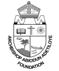
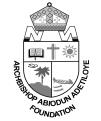

NUPAT Technologies is a software development company from African
descent birthed by the vision of becoming a leading brand in world class
innovation and delivery of masterpiece and cutting edge technology. The
Company is founded by a group of distinct, highly skilled, innovative and
experienced tech experts.
The Company is registered with the Corporate Affairs Commission of the
Federal Republic of Nigeria, established under the Companies and Allied
Matters Act 2020. Nupat is the partner of choice for many of the world’s
leading enterprises, SMEs and technology companies. We help businesses
elevate their value through custom software development, product design, QA
and consultancy services. We can help to maintain and modernize your IT
infrastructure and solve various infrastructure-specific issues a business may
face.
NUPAT TECHNOLOGIES also provides intensive practical software
development boot-camp that is ushering in a new generation of indigenous
software developers driving innovation and software development in the
information and technological industry. The training utilizes the experience
and skill sets of veterans in the industry. Quality practical training and online
resources are used in a conducive, team building and challenging
to inspire and mold the interns to become great tech experts.

 
